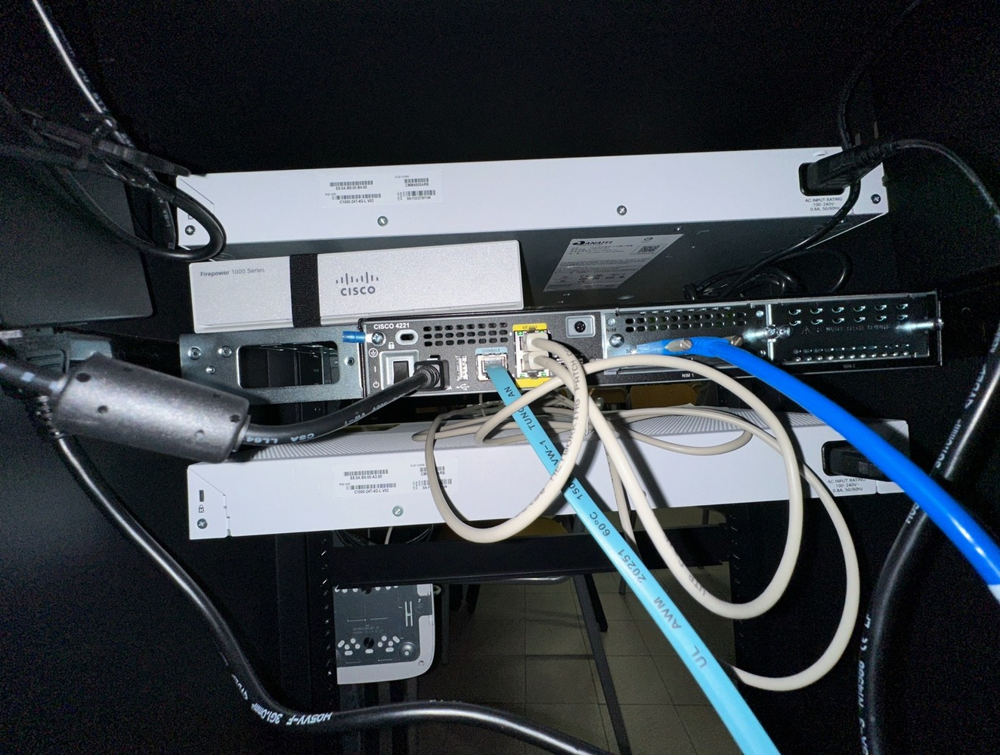
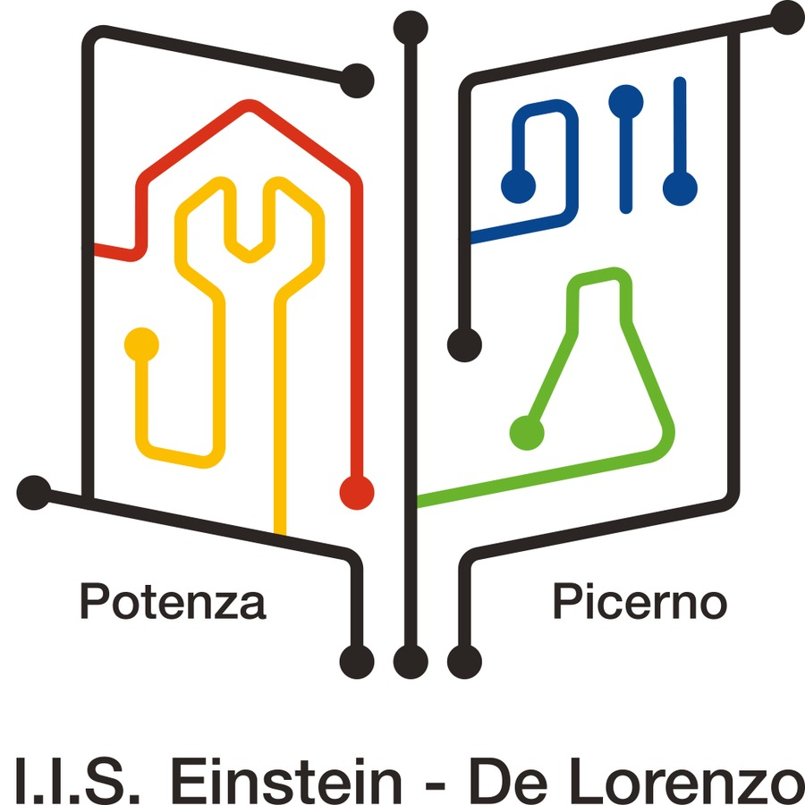

Mi chiamo Giovanni Mauro e frequento l’indirizzo Informatica dell’ITIS. Ho organizzato questo sito come una piccola mappa del mio PCTO: anno dopo anno racconto esperienze, enti coinvolti e competenze maturate, arrivando a un totale di 344 ore.
Le attività hanno unito lettura scientifica, innovazione digitale, sicurezza, reti informatiche e orientamento. Dall’Università della Basilicata a VETA WEB, fino ai progetti con BetFlag e CAI Potenza, ogni esperienza ha aggiunto un tassello diverso alla mia formazione.
Navigando tra le pagine si può seguire il filo del triennio: presentazione personale, schede dei progetti, materiali di supporto e riflessione conclusiva su ciò che porto con me verso l’Esame di Stato.